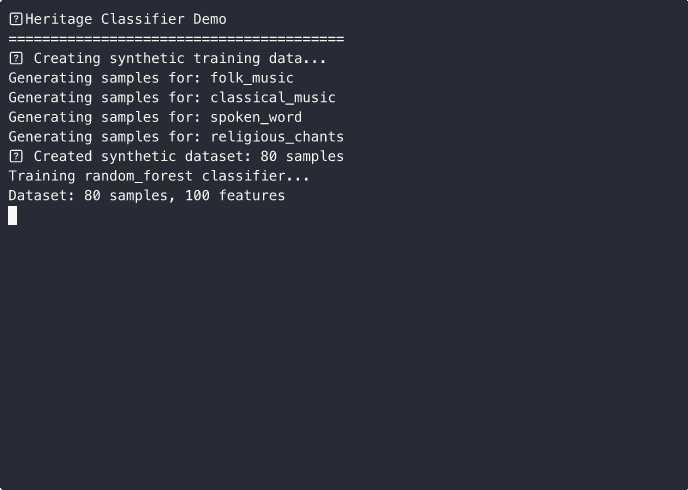

Projects
MOOD 2.0 - Mood Soundscape Agent
The next generation of MOOD: an intelligent audio agent that generates adaptive soundscapes in real-time. Ideal for museums, festivals, and immersive installations, seamlessly integrating with QLab, Resolume, and other professional systems via OSC.
Tech Stack:
Tags & Integrations:
MOOD: Adaptive Artistic Environment
Our full-stack AI system analyzes the environment in real-time to direct complex artistic installations. MOOD transforms static spaces into dynamic experiences that react to the audience, integrating with leading industry software.
Tech Stack:
Tags & Integrations:
(Note: The full repository is private. This showcase illustrates key components.)
Audio AI Projects
A collection of libraries and models for reactive audio analysis and synthesis using deep learning, including sound event classification and texture generation.
Tech Stack:
Tags:
Live Demos:
Batch Processor
Ideal for preparing machine learning datasets, this Python script automates repetitive tasks like resampling, volume normalization, silence trimming, and feature extraction (e.g., MFCCs, spectrograms). Users can define a custom processing chain via a configuration file, making the tool extremely flexible for optimizing data preparation workflows.

Demo Week 4
RAI Archive Integration
Leveraging the tool's API, the script enriches content with metadata, segments audio to identify speech/music, and applies speech-to-text models for transcription.

Audio Metadata Extraction
A script for automated analysis and extraction of technical and descriptive metadata from audio files, essential for cataloging large archives.
Cultural Heritage Classifier
A deep learning model trained to classify audio-visual content related to cultural heritage (dialogues, period music, sounds).
Cultural AI Platform
A simulation of a web platform that integrates the various tools, offering a single interface for the analysis and search of digital archives.
Interactive Audio System for Museums
Simulated Experience
This simulation shows an AI audio system applied to exhibition spaces like the MAXXI in Rome or the Triennale in Milan. Moving beyond the concept of a passive audioguide, the system tracks visitors and dynamically adapts the soundscape (music, narration) to create an engaging and personalized experience.
AI Audio Processing
This demo on Hugging Face shows how the core API powers the system. Test the AI engine that selects audio content in real-time, demonstrating the backend's robustness and responsiveness.
Test the API on Hugging FaceProduction Systems & Cultural Analysis
Enterprise Production Platform
This system analyzes entire folders of audio files in parallel. Every operation is tracked in a database to ensure reliability and scalability, making it a robust solution for large-scale archives.

AI for Cultural Heritage
A specialized solution simulating a project for institutions like RAI Teche. The AI performs cultural analysis, detects degradation in historical tapes, and generates a business case for conservation.
Open & Flexible API
This demo showcases our modern, documented API. The system is not a black box but integrates easily into existing workflows, ensuring rapid and low-cost adoption for any institution.

Lab & Research
AI Audio-Vision Lab
Prototyping systems that correlate visual inputs with generative audio outputs to explore computational synesthesia.
Acoustic Space Analyzer AI
An acoustic analysis tool that uses neural networks to classify the characteristics of a space from an audio impulse.
LAIVE Interactive AI
A framework for AI-driven interactive experiences, integrating LLMs and computer vision for real-time generative dialogue.